Somewhere above Newcastle you leave northern Europe and enter Scandinavia, which in the UK is called Scotland. Scotland's a bit dark and overcast in winter, but it has great natural and architectural beauty and its own very distinct character. Contrary to a prevalent stereotype I have found the Scottish man or woman on the street extremely pleasant.
The Scots do however not mince their words: when in the Heriot-Watt canteen one day I suggested that two leaves of lettuce and half a tomato was “perhaps just a little less than generous”
, the lady suggested, with a smile and an ‘r’
rolling like the foothills of Ben Nevis, that “Sir was perhaps just a little greedy”
.
You know where you stand, with a Scot — but go to Italy for the salad course.
Building site
So I was cycling up Morrison Street and just about here I saw a building site.
They'd demolished something and there were cranes and tractors and diggers all over the place — and this one cash machine (with ‘cash machine’
written on it), untouched and spotless.
It's obviously a TARDIS, or perhaps a secret entrance to a nuclear bunker.

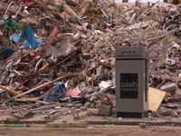

Galleries
Edinburgh has plenty of scope for culture, the quality of the exhibits is top-notch and, being quite a small city, everything is easily accessible. They don't permit photography inside (a mistake, in my opinion) but I can still photograph the outside.
The Dean gallery has a lovely allotment and when I visited I caught it in full summer bloom.

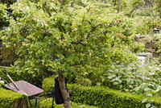

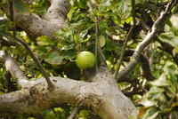

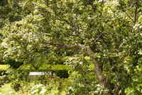

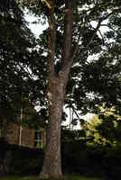

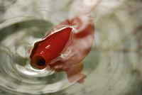


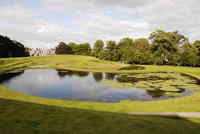

Images of scotland
Just some pics.

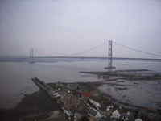

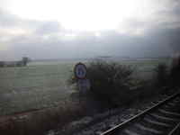

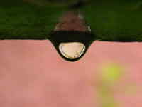


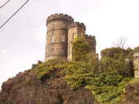

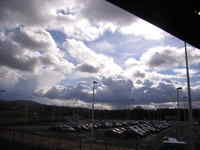

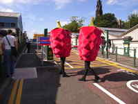

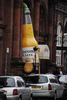


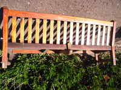


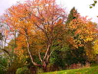

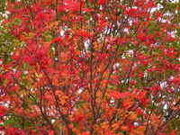

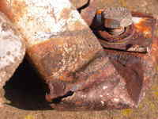

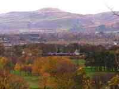


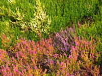


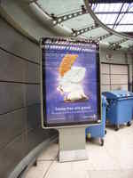

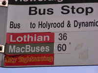

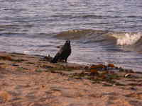

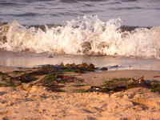

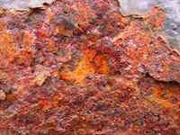

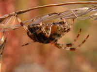

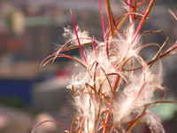


Glengoyne
I visited the Glengoyne distillery.
It's a very charming and astonishingly small place; six big wooden vats to fermet and three rather small distilling columns. Their ‘Ewan's choice’
whiskey was a work of genius — but they'd sold out the day before. I tasted the dregs of the last tasting bottle. If you happen to be in the area it's worth a visit.


Inverary
A lovely place for a weekend away. Zero nightlife but that's not the point; the location is the star of the show. There are also some nice craft and whiskey shops and a castle or two. And then, in a very old church belltower, what do I find but a Chanukkia — a candle-holder that can hold nine candles and half-a-hundredweight of cultural symbolism.
Who? How? Why?
God knows. Probably I never will. My guess is that the local church, somehow, had the rather splendid Chanukkia pictured below, and the local school had their students do a project on it each year. Anyway, it was nice to see it.
When I visited the weather wasn't that good for taking photographs. Still, I missed not having a wideangle lens. That problem was easily sorted out; I went out and bought myself the Sigma 10-20mm (_then sold it for the greatly superior Tokina 11-16_).

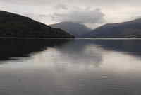

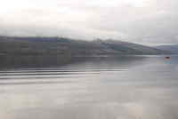

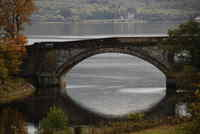


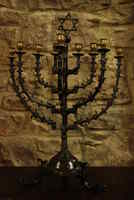

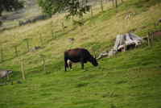

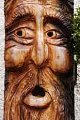

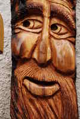

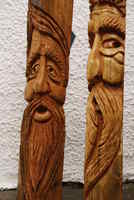

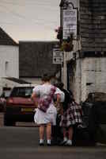

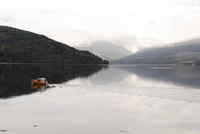

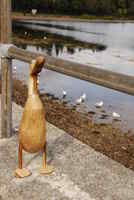

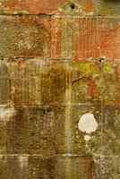

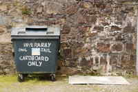

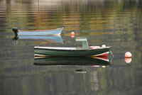

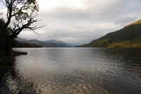

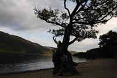

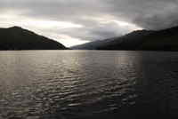


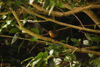

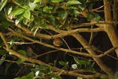


Musselburgh
On 5 November I went to the fireworks display in a wonderfully charming town to the east of Edinburgh. It's the best show in town, and if you turn yourself around afterwards you can look across the bay and see Edinburgh sparkling with fireworks.


Bumblebee in Pollok Park
I found this fellow going about his magnificently colourful business in Pollok Park. Just as I had taken the shots below a small dog bounded past me and butted the bee with its nose, then jumped back in startled confusion. The bee tumbled in mid-air, righted itself skilfully, and zoomed off — very much like Darth Vader at the end of Star Wars. The dog stayed a while sniffing around in eager confusion — then the train of thought derailed, no doubt as many other trains of thought had in the past, and it bounded off.
This goes to prove once again that having the bigger brain does not necessarily mean that you're aren't a complete and total wally.


Pollok park
Pollok park is in Glasgow. It has a country house, highland cattle, the Burrell Collection, a formal garden, a stream with fish, and the most wonderful vegetable garden, all set in woodland. It's absolutely lovely.


Princes street gardens
Round the corner from Waverley, right here.


Countryside
I finally managed to get out and about in the Scottish countryside. Scotland has some really nice sandy beaches. They're not polluted and they're not terribly crowded either. In twenty years it'll be the new Malaga.


Bricks
Scotland does great big ominous volcanic bricks that glare at you as if to say “if you'd been here a billion years ago, I'd have roasted you alive, laddie”
.


Scottish buses
The Scots are surprisingly reticent about their nationality. (They can start drinking early, too.)


The Edinburgh to London train
I really don't mind travelling by train. The link between Edinburgh and London is run by GNER. Their trains have a retro feel which I love, and the scenery is very pleasant. I usually keep my camera to hand.


The Edinburgh Festival
In August Edinburgh is invaded by an extraordinary concentration of artistic talent; the arts festival, the book festival, the film festival, the fringe festival ...
It costs 10,000 pounds to do a one-man show for the three weeks of the Fringe festival. Performers do it for the pleasure, and in the usually forlorn hope of being talent-spotted.
Stand in any street in Edinburgh in August, open your mouth wide, and stick your tongue out. (Make sure there are no little girls walking past, or you could get into trouble.) What you can taste is the hunger of a hundred thousand artists — all yearning for success and a paying forum for their self-expression. I felt privileged to be there to see it.